contracts
├── MintverseDictionary.sol
├── MintverseWord.sol
├── interfaces
│ ├── IMintverseDictionary.sol
│ ├── IMintverseWord.sol
│ └── IWord.sol
└── libraries
└── ERC721A.sol
ERC721A
本次的兩份合約皆繼承
ERC721A。ERC721A 是目前 NFT
圈中最常見，也是經過最多測試的 ERC721 延伸協議，最初由 NFT 項目 Azuki
發布，改進的方向是為了降低批量 Mint 時的 Gas Fee
所開發出來的協議，節省智能合約在鏈上寫入資料的工作。以往的標準較多使用
OpenZeppelin 所發佈的 ERC721 Enumerable，但 Mint 時需要一個個紀錄
Token 所有者，因此 Gas Fee 將會成倍數上升，而 ERC721A 則改由紀錄每次
Mint 時的起始編號，來改變需要一個一個 Mint的限制。而 ERC721A
也在團隊完成發行之後交由工程團隊 Chiru Labs
維護。以下為官方文件中有關於 Gas 的比較與介紹連結：
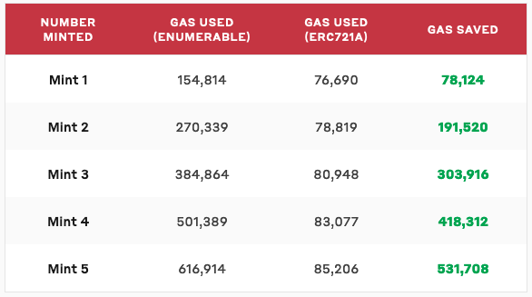
Gas used: ERC721 Enumerable v.s. ERC721A
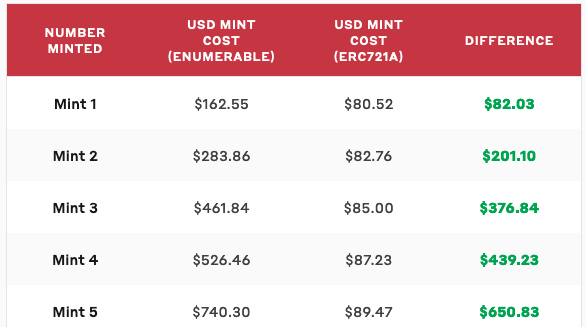
Gas Fee(in USD): ERC721 Enumerable v.s. ERC721A
MintverseWord.sol
Metadata 上鏈
MintverseWord Token 將會紀錄與詞彙相關的
Metadata。每一個詞彙一共會包含九個部分，分別是鑄造者
definerPart、關係詞 relatedWordPart、註釋 descriptionPart、詞彙
wordPart、詞彙類別 categoryPart、詞性一 partOfSpeechPart1、詞性二
partOfSpeechPart2、詞彙倒數起始時間 mintTime、是否定義 defined。
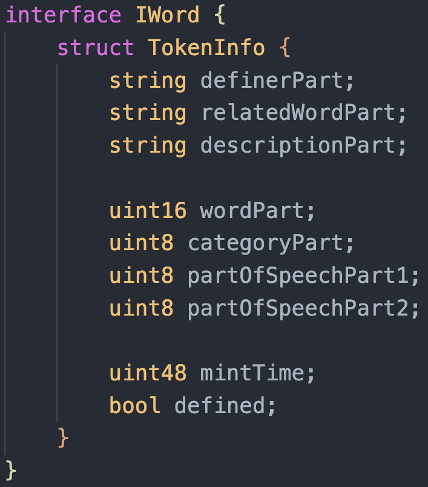
每個 token 所會儲存在鏈上的資料
Gas 優化
上述的詞彙 Metadata 在經過優化後，降低了百分之三十的 Gas
Fee。我們調整了資料儲存的順序與容量，讓所有資料能以四個 256 bytes
的儲存空間被紀錄在鏈上，同時也調整了合約內的判斷邏輯，讓每位鑄造者盡可能只需要經過最少的判斷式以節省
Gas 用量。
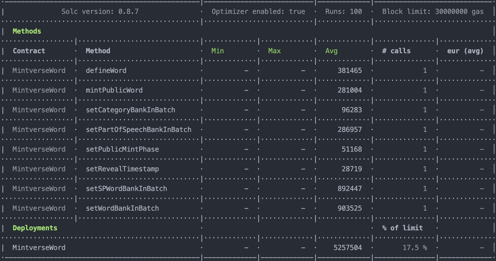
MintverseWordV1.sol: mintPublicWord 281,004 Gas (0.014 ETH, 50 Gwei),
defineWord 381,465 Gas (0.019 ETH, 50 Gwei)
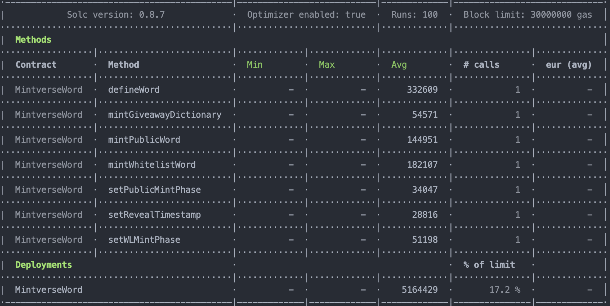
MintverseWordV2.sol: mintPublicWord 144,951 Gas (0.007 ETH, 50 Gwei),
defineWord 332,609 Gas (0.016 ETH, 50 Gwei)
隨機性詞彙
要做到 100% 鏈上的隨機性，需要透過 Chainlink VRF
的服務，但這樣會需要更多的 Gas，因此我們參考 Hashmasks 的作法透過
block.timestamp 與 msg.sender 來產生 hash 進而決定出 token
與詞彙庫配對的起始點，在可預測性隨機與 Gas Fee 之間取得一個平衡。
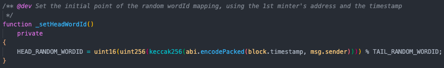
_setHeadWordId: 透過 block.timestamp & 鑄造者地址創造隨機性
解盲時間設定
由於每個詞彙將在 5/9
進行解盲，因此開始倒數計時的時間也將不同，在合約中依據每個詞彙鑄造的時間，設定不同的倒數計時起始時間，如果是在解盲前鑄造將由解盲時間開始倒數計時，如果是在解盲後鑄造將依據鑄造時間開始倒數計時。
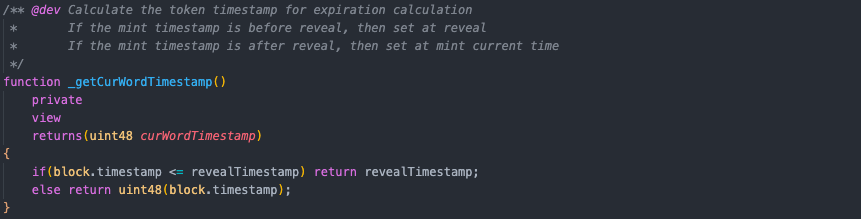
_getCurWordTimestamp: 判斷詞彙倒數起始時間
詞彙死亡與可撰寫時間
每個詞彙在鑄造完成後設定了倒數計時起始時間，而詞彙只有兩種情況下可被撰寫：一、倒數起始的
42
小時內，二、已被撰寫過。反而言之，倒數起始前是無法撰寫的，以及倒數起始
42 小時後又無人撰寫的 Token 將進入死亡無法再撰寫並符合循環重置條件。
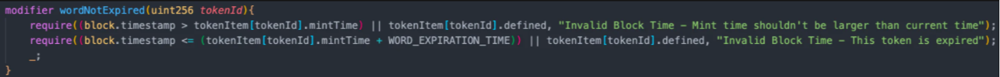
wordNotExpired: 判斷詞彙可撰寫條件
詞彙循環重置
白名單與公售將會配對到隨機詞彙庫中的 1900 個詞彙，而每個詞彙在 42
小時後若無人定義，將死亡並重新回到詞彙庫中，因此合約中設計了清算的機制，由官方執行
settleExpiredWord 的函式，並由 startTokenId 依序往後清算至
endTokenId，若遇到死亡詞彙則觸發事件將詞彙移至詞彙庫末端。
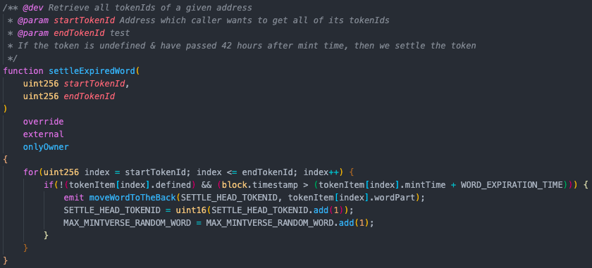
function settleExpiredWord(uint256 startTokenId, uint256 endTokenId)
資料儲存與讀取
每個鑄造者可以透過 defineWord
函式來定義詞彙，送出交易並將資料寫入鏈上，而前端網頁以及生成式藝術引擎將會透過
getTokenProperties 函式讀取 token
的相關資料進行渲染與影像生成。以下為系統結構圖與相關的函式：
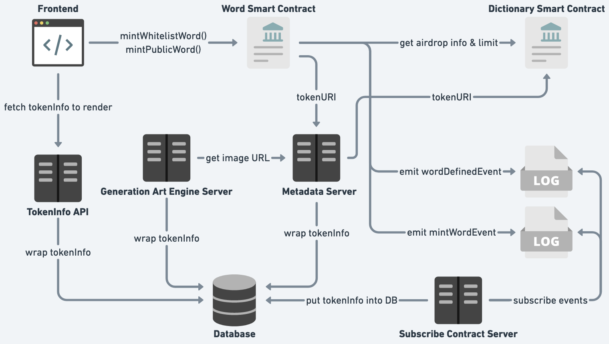
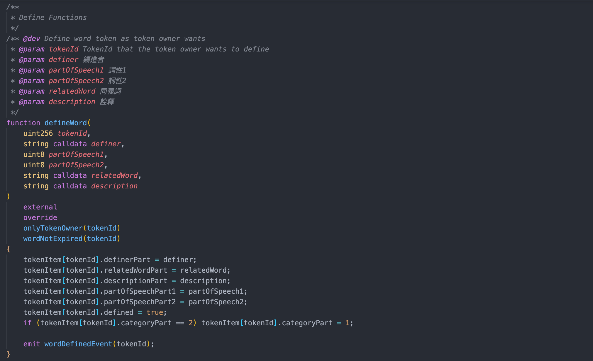
function defineWord(uint256 tokenId, string calldata definer, uint8
partOfSpeech1, uint8 partOfSpeech2, string calldata relatedWord,
string calldata description)
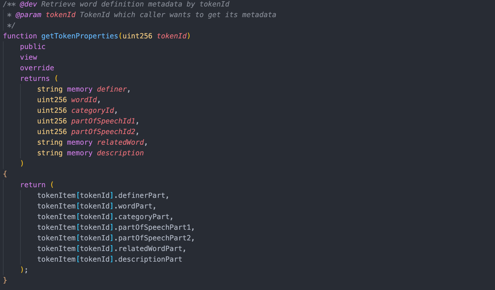
function getTokenProperties(uint256 tokenId)public view override
returns (string memory definer, uint256 wordId, uint256 categoryId,
uint256 partOfSpeechId1, uint256 partOfSpeechId2, string memory
relatedWord, string memory description)
MintverseDictionary.sol
MintverseDictionary Token
合約的主要功能則為判斷鑄造者地址是否有加購辭典，若有加購且尚未空投過則符合空投條件，會由官方承擔
Gas Fee 空投給持有者，另外也在白名單與公售的機制中與 MintverseWord
Token 互動，檢查加購數量，確保總數維持在 210 個。
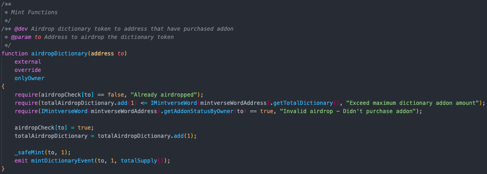
function airdropDictionary(address to)